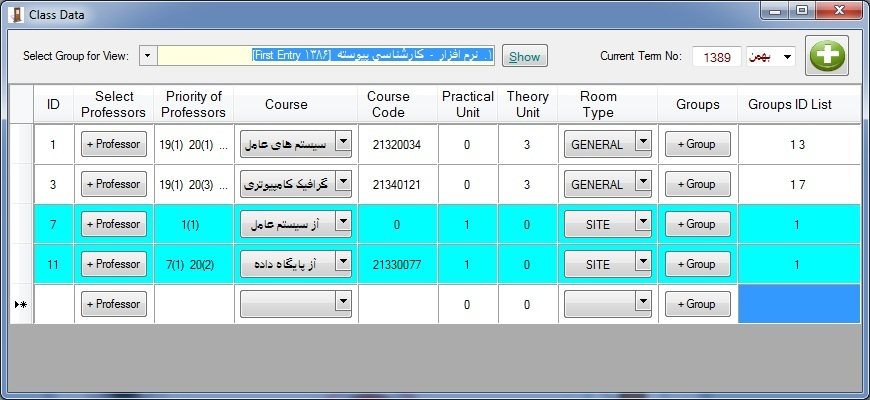
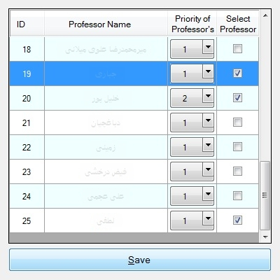
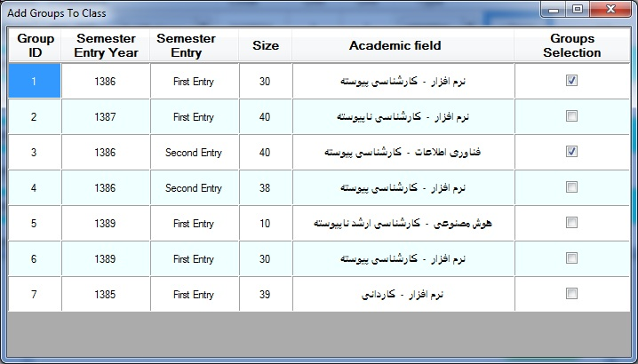

The Course Class holds a reference to the course to
which the class belongs, a reference to the professor who teaches, and a list
of student groups that attend the class. It also stores how many seats (sum of
student groups' sizes) are needed in the classroom, if the class requires
computers (room type) in the classroom, and the duration of the class (in
hours).

For convenience, you can enter only number of
current semester and press the plus key to added all classes of all groups
related by entered term number's in the class
list.
* Course Code column will be fill automatically by
select Course name from Course
column.
You can add the some of professors by different
priority to a class till the this program choose one of them for class. for
this work please click on "+ Professor" buttons to open Select Professor
form's:

In this form select any professor who you
want to do teach in the class, and allocate a number to professors for define
priority to teach. for this work select combo Box number's of "Priority of
Professor's" column. you can set a const number (Fixed number for example :
number 1) for some professors, this means is that professors priority is
equal.
Any class in "Class Data" form's have a list
of student groups that attend the class. for add some groups to the class
click on "+ Group" button to open "Add Groups to Class"
form:

* Academic field is a Branch full name (Education Course
Name + Education Degree + Branch
ID).
* Semester Entry the student group is entering turn means
that the first half and second half
year.
* Semester Entry Year means is what years the student
group is entering. for example : 2011 or 1390, The first year is based on
Anno Domini calendar and the second is based on the solar
calendar.
* Size is number of students in a Group for a specific
branch and
semester.
You can select several groups per a
class.
End of work you can show a group classes, by select them
from "Select Group for View" combo Box and click on show
button.